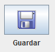
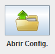

JGAL_GUI permite guardar y abrir configuraciones para todo un Algoritmo Genético o parte de él.
Para Guardar o Abrir parte de la configuración, entra en una de las ventanas auxiliares como Definir Genes. Ahí se puede acceder a estas acciones a través del menu Archivo
Para Guardar o Abrir una configuración completa hay que estar en "Ejecutar Algoritmo" (Sin las comillas) y pisar sobre el botón:
Si se desea Guardar y en el botón:
Si se desea Abrir.
JGAL_GUI permite además guardar los resultados si se presiona sobre el botón de Guardar en "Ejecutar Algoritmo"